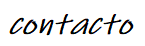
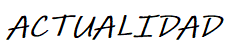
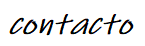
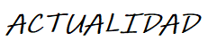

SEGURIDAD INFORMATICA |
|
¿Que es la seguridad informatica?La seguridad informática es una disciplina que se encarga de proteger la integridad y la privacidad de la información almacenada en un sistema informático. De todas formas, no existe ninguna técnica que permita asegurar la inviolabilidad de un sistema. 
¿Como puede ser protegido un sistema informatico?Un sistema informático puede ser protegido desde un punto de vista lógico (con el desarrollo de software) o físico (vinculado al mantenimiento eléctrico, por ejemplo). Por otra parte, las amenazas pueden proceder desde programas dañinos que se instalan en la computadora del usuario (como un virus) o llegar por vía remota (los delincuentes que se conectan a Internet e ingresan a distintos sistemas). 
¿Que tipos de virus existen?En el caso de los virus hay que subrayar que en la actualidad es amplísima la lista de ellos que existen y que pueden vulnerar de manera palpable cualquier equipo o sistema informático. Así, por ejemplo, nos encontramos con los llamados virus residentes que son aquellos que se caracterizan por el hecho de que se hallan ocultos en lo que es la memoria RAM y eso les da la oportunidad de interceptar y de controlar las distintas operaciones que se realizan en el ordenador en cuestión llevando a cabo la infección de programas o carpetas que formen parte fundamental de aquellas. De la misma forma también están los conocidos virus de acción directa que son aquellos que lo que hacen es ejecutarse rápidamente y extenderse por todo el equipo trayendo consigo el contagio de todo lo que encuentren a su paso. Los virus cifrados, los de arranque, los del fichero o los sobreescritura son igualmente otros de los peligros contagiosos más importantes que pueden afectar a nuestro ordenador. 
Seguridad de HardwareBásicamente, la seguridad informática en torno al hardware, como su nombre lo indica, se encarga de proteger todos los elementos físicos que componen una red, es decir desde el router hasta el teléfono que se conecta a la red en cuestión. Por lo general se trata de herramientas que llevan a cabo un escaneado del sistema para poder controlar el tráfico de red, y en este sentido podemos citar como ejemplos a los llamados cortafuegos o firewalls de hardware, como así también a los servidores proxy. 
Seguridad de softwareOtro de los tipos de seguridad informática es la seguridad de software, la cual por supuesto se refiere a la protección de todo tipo de programas y sistemas informáticos con el fin de evitar el ingreso de malware y los ataques maliciosos de ciberdelincuentes. En líneas generales, podemos decir que la seguridad informática en el área del software es la que nos brinda integridad, autenticación y disponibilidad, mientras nos mantiene protegidos contra posibles ataques externos. Tengamos en cuenta que en muchos casos los software pueden tener ciertos defectos que los convierten en vulnerables para los ciberdelincuentes, lo cual expone nuestros sistemas y nuestras redes a elementos tales como virus, malware y demás. En este sentido, es importante mencionar que además aquellas aplicaciones y sistemas que suelen tener comunicación externa a través de internet poseen un riesgo mayor de ser atacadas, por lo que en este ámbito la seguridad informática del software se refuerza aún más. 
|
|